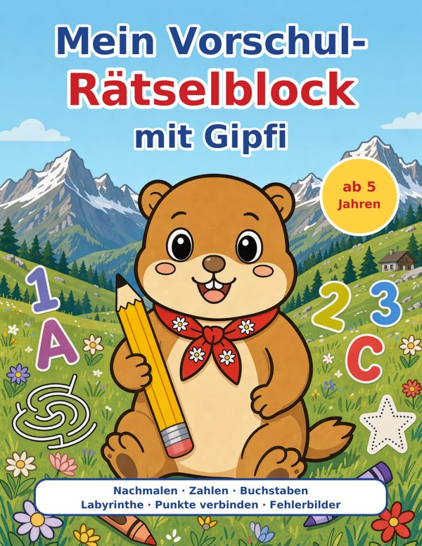
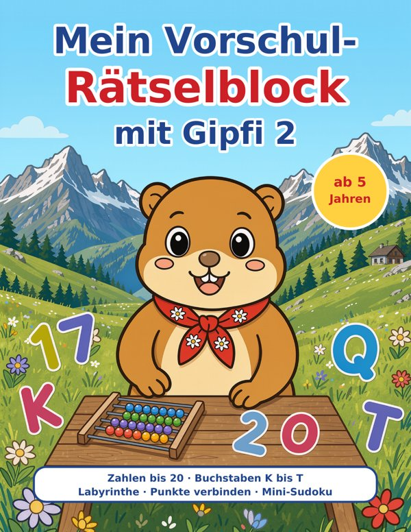
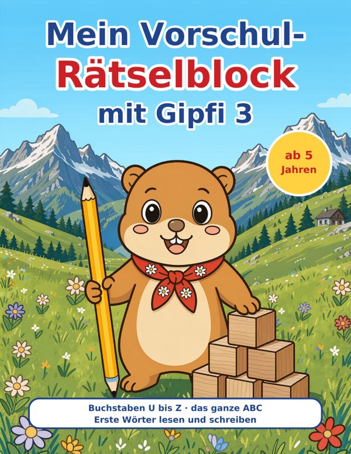
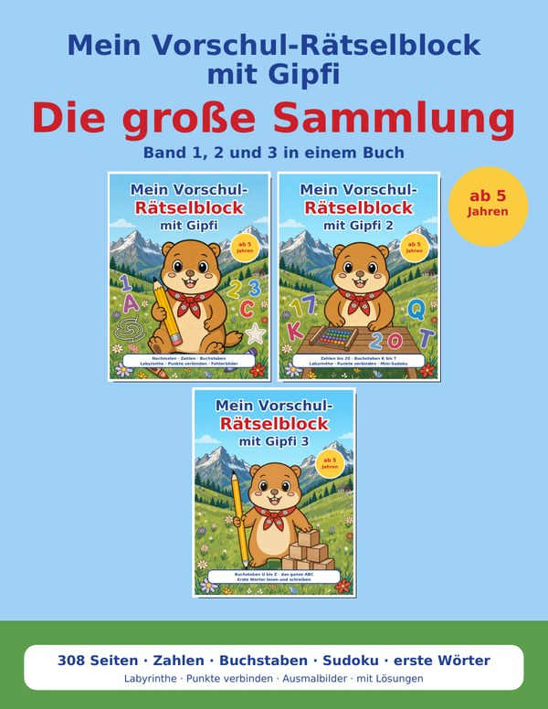
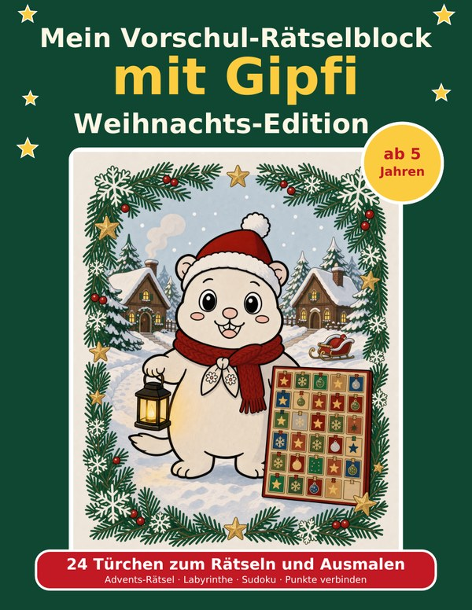

Band 1: Zahlen bis 10, Buchstaben A bis J
100 Seiten · Taschenbuch 21,6 × 27,9 cm · ab 5 Jahren
- Linien und Formen nachmalen (Schwungübungen)
- Zahlen von 1 bis 10 zählen und nachmalen
- Anlaute und Großbuchstaben A bis J
- 10 Labyrinthe, Punkte verbinden, Was passt nicht?
- Urkunde «Vorschul-Profi» und Lösungen für Eltern
Band 1 bei Amazon ansehen
Mehr zu Band 1 und Probeseiten

Band 2: Zahlen bis 20, Buchstaben K bis T
100 Seiten · Taschenbuch 21,6 × 27,9 cm · ab 5 Jahren
- Zahlen von 11 bis 20 mit Zehnerfeld und Zahlenreihe
- Anlaute und Großbuchstaben K bis T
- NEU: Mini-Sudoku als erstes Logikrätsel
- 10 Labyrinthe, Punkte verbinden bis 20, 4 Unterschiede
- Urkunde «Zahlen-Profi bis 20» und Lösungen für Eltern
Band 2 bei Amazon ansehen
Mehr zu Band 2 und Probeseiten

Band 3: Buchstaben U bis Z, erste Wörter
100 Seiten · Taschenbuch 21,6 × 27,9 cm · ab 5 Jahren
- Anlaute U bis Z und das ganze ABC
- Erste Wörter lesen: Silben, Reime, Wort und Bild
- Erste Wörter schreiben und ein eigenes kleines Wörterbuch
- NEU: ABC-Wege, ABC-Punkte und Buchstaben-Sudoku
- Urkunde «ABC-Profi» und Lösungen für Eltern
Band 3 bei Amazon ansehen
Mehr zu Band 3 und Probeseiten

Die große Sammlung: Band 1, 2 und 3 in einem Buch
308 Seiten · Taschenbuch 21,6 × 27,9 cm · ab 5 Jahren
- Alle drei Hefte in einem Buch, durch das ganze letzte Kindergartenjahr
- Zahlen bis 20, das ganze ABC und erste Wörter
- Labyrinthe, Punkte verbinden, Mini-Sudoku und Buchstaben-Sudoku
- Günstiger als drei Einzelhefte, alle Lösungen am Ende jedes Heftes
Die große Sammlung bei Amazon ansehen
Mehr zur großen Sammlung

Weihnachts-Edition: Adventskalender zum Rätseln
112 Seiten · Taschenbuch 21,6 × 27,9 cm · ab 5 Jahren
- 24 Türchen mit Rätsel und Zugabe
- 24 Ausmalbilder und eine Weihnachts-Werkstatt
- Labyrinthe, Mini-Sudoku, Punkte verbinden, Unterschiede finden
- Rätsel für die Tage zwischen den Jahren
- Ideal als Adventskalender oder Nikolaus-Geschenk
Weihnachts-Edition bei Amazon ansehen
Mehr zur Weihnachts-Edition
Für wen ist der Gipfi-Rätselblock?
Für Kinder ab 5 Jahren im Kindergarten und in der Vorschule. Jede Aufgabe hat eine kurze Anleitung zum Vorlesen, die Bilder im Malbuch-Stil laden zusätzlich zum Ausmalen ein. Die Bände bauen aufeinander auf: Band 1 startet mit Zahlen bis 10 und den Buchstaben A bis J, Band 2 führt weiter bis 20 und zu den Buchstaben K bis T, Band 3 schließt das ABC mit U bis Z ab und führt zu den ersten Wörtern. Die große Sammlung bündelt Band 1 bis 3 in einem Buch, und die Weihnachts-Edition ist das Advents-Heft mit 24 Rätsel-Türchen bis Weihnachten. Ein schönes Geschenk zum Geburtstag, für die Ferien oder zur Einschulung.